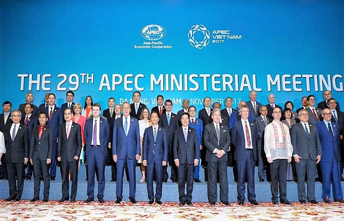
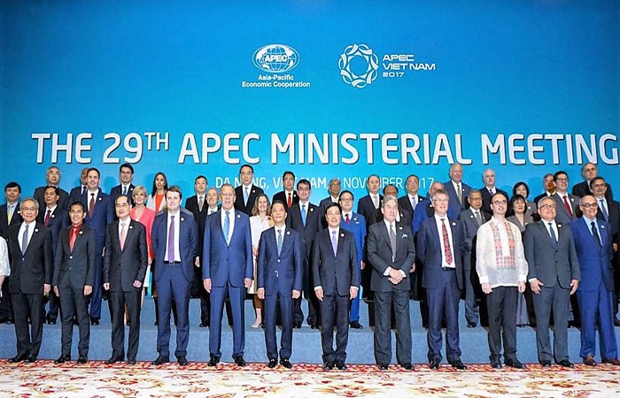
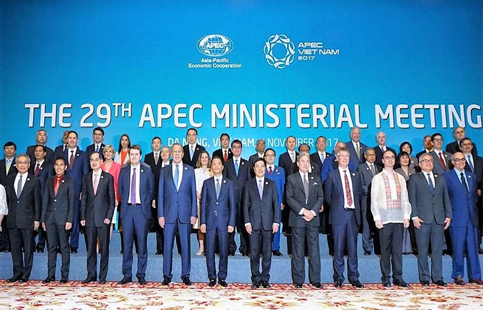

APEC (Asia-Pacific Economic Cooperation) adalah forum kerjasama ekonomi yang terdiri dari 21 negara dan wilayah di kawasan Asia-Pasifik, yang bertujuan untuk mendorong perdagangan bebas dan kemajuan ekonomi di wilayah tersebut. Didirikan pada 1989, APEC berfokus pada peningkatan perdagangan dan investasi antar negara anggotanya, serta memperkuat integrasi ekonomi dan pengembangan infrastruktur di kawasan Asia-Pasifik.
Tujuan utama APEC adalah untuk menciptakan kondisi yang lebih baik bagi pertumbuhan ekonomi, meningkatkan kesejahteraan masyarakat, dan mempererat hubungan ekonomi antara negara-negara anggotanya. APEC juga berkomitmen untuk mengurangi hambatan perdagangan, mempromosikan kebijakan ekonomi yang terbuka, serta memperkuat konektivitas antara negara-negara anggotanya melalui berbagai inisiatif seperti liberalisasi perdagangan, pengembangan sumber daya manusia, dan inovasi teknologi.
Negara-negara anggota APEC meliputi negara-negara besar seperti Amerika Serikat, China, Jepang, Rusia, dan Australia, serta negara-negara berkembang di kawasan Asia dan Pasifik. APEC tidak mengikat negara anggotanya untuk membentuk perjanjian perdagangan formal, tetapi lebih pada diskusi dan kolaborasi untuk mencapai tujuan bersama dalam meningkatkan ekonomi kawasan.

Tujuan Kerja Sama Regional APEC
Membangun komunitas Asia-Pasifik yang dinamis dan harmonis dengan memperjuangkan perdagangan serta investasi yang bebas dan terbuka.
Memperjuangkan kepentingan ekonomi di kawasan Asia Pasifik dengan mendorong dan mempercepat kerja sama pengembangan kapasitas ekonomi anggota.
Meningkatkan perdagangan dan investasi antaranggota
Meningkatkan keamanan dan memfasilitasi lingkungan bisnis yang menguntungkan dan berkelanjutan.
Mengurangi dan mengatasi sengketa ekonomi perdagangan.
Contoh Kerja Sama APEC
Perdagangan Bebas
Perdagangan bebas dalam kerja sama regional APEC bertujuan untuk mengurangi hambatan perdagangan antar negara-negara anggota, mempercepat aliran barang, jasa, dan investasi di kawasan Asia-Pasifik. APEC mendukung kebijakan perdagangan yang terbuka dan inklusif, dengan mengutamakan penghapusan tarif dan pengurangan hambatan non-tarif. Meskipun APEC tidak memiliki perjanjian formal yang mengikat, negara-negara anggotanya berkomitmen untuk melaksanakan langkah-langkah yang mengarah pada perdagangan bebas melalui berbagai inisiatif, seperti Bogor Goals yang dicanangkan pada 1994.
Pembangunan Berkelanjutan
Pembangunan berkelanjutan dalam kerangka kerja sama regional APEC berfokus pada pencapaian pertumbuhan ekonomi yang inklusif dan ramah lingkungan, yang tidak hanya memperhatikan aspek ekonomi, tetapi juga sosial dan lingkungan. APEC berupaya mendorong negara anggotanya untuk berkolaborasi dalam mempromosikan kebijakan yang mendukung keberlanjutan jangka panjang, termasuk dalam hal penggunaan sumber daya alam, perubahan iklim, dan pengurangan emisi karbon.
 
